Lecture de notes
- La note
- L'ordre des notes
- Notes repères : do et sol
- Notes voisines
- Nouveau point de repère : le mi
- Toutes les notes
- Les notes sur un piano
- Lecture dans les lignes supplémentaires
- Altérations simples
- Armure à la clé
1. La note
Elle est composée de 3 parties : la tête, la hampe et la durée.
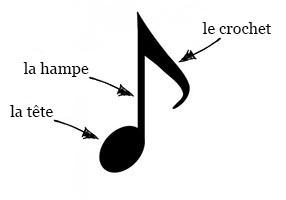2. L'ordre des notes
Connaître les notes dans l'ordre :
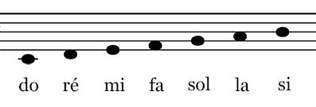Et en sens inverse :
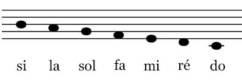3. Notes repères : do et sol
On va apprendre à repérer le sol et le do.
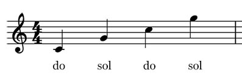4. Notes voisines
On va apprendre à repérer les notes qui entourent le sol et le do.
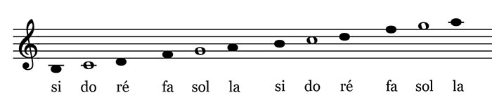5. Nouveau point de repère : le mi
Exercice pour note repère.
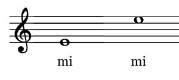6. Toutes les notes
Nous savons maintenant lire toutes ces notes.
Le but de l'exercice est d'apprendre à lire de plus en plus rapidement toutes les notes que nous connaissons déjà.
7. Représentation des notes sur un clavier de piano
Le do situé sur la ligne du bas est aussi appelé do serrure car il est placé au niveau de la serrure du capot du piano.
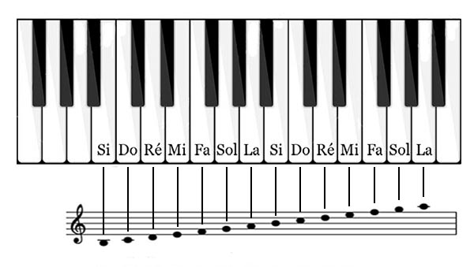8. Lecture dans les lignes supplémentaires
Notes repères :
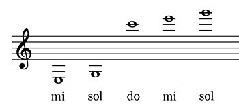Notes voisines :
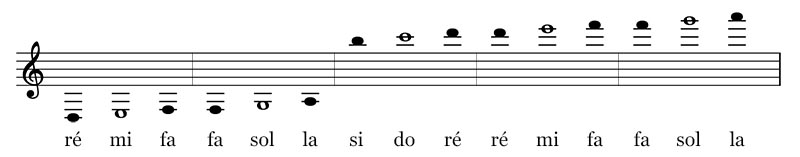9. Altérations simples
Une altération simple est le fait d'augmenter ou de diminuer une note d'un demi ton.
Sur la partition, l'altération est notée avant la note afin de savoir tout de suite si la note est altérée.
Il existe 3 types d'altérations :
- Le dièse : ♯. Il permet d'augmenter la note d'un demi ton
Ex : si on augmente le do d'un demi ton, on obtiendra un do♯
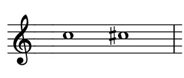- Le bémol : ♭. Il permet de diminuer la note d'un demi ton
Ex : si on diminue le la d'un demi ton, on obtiendra un la♭
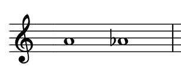- Le bécarre : ♮. Il permet d'annuler l'effet du dièse ou du bémol.
Ex : si on a un fa# on notera fa♮ afin de retrouver un fa naturel.
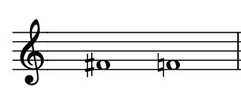10. Armure à la clé
L'armure à la clé est l'ensemble des dièses et bémols qui se trouvent tout de suite après la clé.
Les altérations sont placées sur la ligne ou l'interligne de la note concernée.
Les notes notées avec un ♭ à la clé seront jouéés ♭ sur toute la partition.
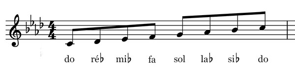Sur cet exemple, les notes si, mi, la et ré de la partition seront jouées bémol.
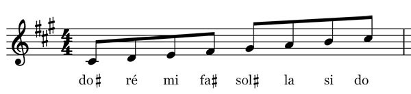Sur cet exemple, les notes fa, do et sol de la partition seront jouées dièse.
L'armure à la clé permet aussi de connaître la tonalité d'un morceau. (A voir plus tard)